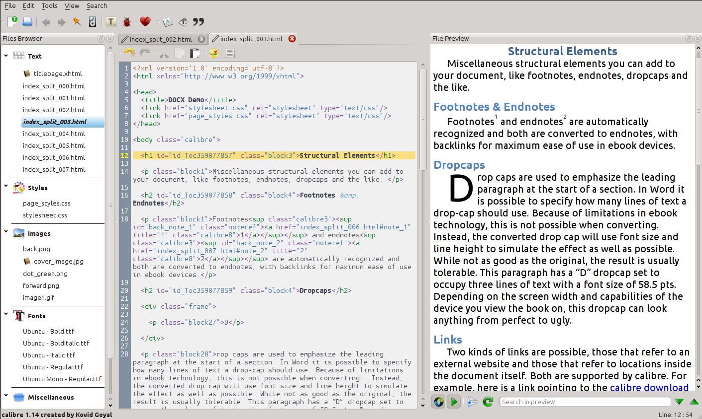

JDH EPub Instructions
[a]This guide covers the process of creating the JDH Epub in Calibre. Calibre is a free open-source ebook library management application. It contains a ebook editor which is used to create the JDH epubs. This document covers each step of creating the JDH epub beginning with the creation and formatting of each individual article into a single epub. After all the individual articles are formatted they are merged into one final epub that can then be exported to pdf and mobi.
Calibre must be downloaded and installed in order to create the epub. Instructions for downloading the most recent version can be found on the Calibre website. Merging the individual articles into a final epub requires the EpubMerge Plugin[b].
Table of Contents
Getting to Know the Calibre Interface
Creating a New Book in Calibre
Creating an Empty Book
Adding Metadata
Formatting the article/book’s HTML/CSS in Calibre
Opening the Calibre Editor
Creating a New HTML file inside the Epub
Adding the Article’s Text/HTML to Calibre
Adding Images to an Article
Uploading Images
Linking Images in the HTML
Styling the Article
Saving and Exporting the Article in Epub Format
Merging Individual Articles into One Anthology
Adding Outside or Shared Files to the Calibre Library
Merging Individual Articles into a Single Epub
File structure of the Merged Anthology
Editing the Merged Anthology
Generate a Table of Contents
Additional Formatting
Exporting to Final Formats and Saving to Disk
To convert the Epub to other formats
PDF Options
Mobi (Kindle) Options
Saving the final files to disk (for posting on the web)
Getting to Know the Calibre Interface
- The calibre “graphical user interface” or library allows users to manage, add, delete, and convert ebooks. The interface includes a toolbar which is used for some of these functions.
- Most relevant for creating the JDH epub are the add books, edit metadata, and convert books, and save to disk buttons.
Creating a New Book in Calibre
Creating an Empty Book
- Create one book for each article in issue by selecting “Add Books → Add Empty Book”
- In the options box add the author of the article to the author field and click “ok”.
Adding Metadata
- In the library click on the title to edit and add the title of the article to the new book.
- Additional meta data can be added with the “Edit Metadata” button.
Formatting the article/book’s HTML/CSS in Calibre
Basic Structure of an epub: An epub is essentially a zipped folder with directories of text (html & xml files), stylesheets (.css files), and images that together make up the epub.
Opening the Calibre Editor
- Right click on the file in the library
- Select “Edit Book”. This will open Calibre’s editor.

- On the right hand side of the editor is the files browser. This will display all the different file types/folders associated with the epub.
- The middle section is the code editor.
- Edits will be rendered in the preview pane on the right
- Double click a file name to open it.
Creating a New HTML file inside the Epub
- In the Calibre Editor, Create a new file using the add button in the toolbar near the top of the editor.
- An epub is a zipped package of files. The files created in calibre are added into a folder within the zipped epub folder.
- Files should be titled: “authorlastname.html”
Adding the Article Text/HTML to Calibre
- The html code for the article should be taken straight from the JDH Wordpress site once the article has been completed and is ready for publication.
- To grab the html: View the JDH article in wordpress and view the source of the file in the browser.
- From the html select the post content starting with the title and ending just before the author bio information.
- you can usually find this section by looking for the <h1> (the start of the article) and the <div class=”author-bio”> (the end of the article text)
- Copy this text and paste it into the calibre html file between the <body> tags.
- The text should now appear in the preview window of the calibre editor.
- Clicking the flower button in the file toolbar will automatically indent and format the html to make it easier to read.
Adding Images to an Article
Uploading Images
- The images that are linked in the wordpress code that is copied in need to be replaced.
- First, upload the images into calibre by selecting: “File → New file (images/fonts/html, etc) → Import Resource File”
- Select all the images and click ok. The images will appear underneath the images heading in the files browser.
Linking Images in the HTML
- The wordpress code that is copied in will contain a image link that looks something like this:
<div id="attachment_6776" style="width: 310px" class="wp-caption aligncenter"><a href="http://journalofdigitalhumanities.org/wp-content/uploads/2014/04/wall_fig1.png" target="_blank"><img class="size-medium wp-image-6776 " alt="Figure 1: Paul's Churchyard, looking west, November 5, 1622. From the visual model constructed by Joshua Stephens and Jordan Grey" src="http://journalofdigitalhumanities.org/wp-content/uploads/2014/04/wall_fig1-300x173.png" width="300" height="173" /></a><p class="wp-caption-text">Figure 1: Paul's Churchyard, looking west, November 5, 1622. From the visual model constructed by Joshua Stephens and Jordan Grey.</p></div>
- The code will need to be edited so that the caption is retained but the links and sizing are removed. The image will need to be linked to the local image file that was uploaded to Calibre.
- The only portion of the code that is needed is the alt text and the caption. Delete or change the wordpress image code. The new code should be:
<img src="../imagename.jpg" alt="alt text here" />
<p class="wp-caption-text">Figure 1: Paul's Churchyard, looking west, November 5, 1622. From the visual model constructed by Joshua Stephens and Jordan Grey.</p>
- alternatively you can use the insert image button to generate the code and then paste the caption and alt text in.

- In the new image code, the “../” in the filename is important because that indicates that the image is located in the main epub folder not in the text folder where the html is saved.
Styling the Article
- Copy the code from the JDH stylesheet in google drive.
- create a new stylesheet in the calibre editor using the add new file button.
- The filename should be “authorlastname_style.css”.
- Link the stylesheet to the html document. Place this code into the <head> section of the html document:
<link rel="stylesheet" type="text/css" href="authorlastname_style.css"/>
- Alternatively you can right click on the file name in the files browser and select “Link Stylesheets” to browse for the file and have calibre generate the code.
- A preview of the epub appears in the window on the right. Check to ensure that all of the formatting is correct.
- Check to make sure:
- All the links work
- All the footnotes work
Saving and Exporting the Article in Epub Format
- A preview of the epub appears in the window on the right. Check to ensure that all of the formatting is correct.
- When finished editing save and exit the editor. To preview the epub right click on the book in the calibre library and under view select ‘View Specific format’. From here you can select epub or mobi and preview it.
- To save the book and upload to drive for merging:
- Select “Save to Disk” → “Save Single Format to Disk” → “Epub”. Choose a location and save.
- Calibre will export a directory with the .epub file and a .opf file. The only file that needs to be shared is the .epub file. [c]
Merging Individual Articles into One Anthology
Adding Outside or Shared Files to the Calibre Library
- Once all the articles have been formatted in individual epub files, they need to be merged into one anthology.
- Download all of the epub files and import them into the calibre library.
- Select “Add Books → Add Books from a Single Directory”
- To merge the files into one anthology you must have the Epub Merge plugin installed.
- Open the Preferences menu
- Select “Plugins”
- Search for Epub Merge and select “enable plugin”
- The plugin support form can be viewed here.
Merging individual articles into a single Epub
- Select all of the articles that need to be included in the merged version (hold down the command key.)
- Right click and Select “Epub Merge → merge epubs” or use the Epub Merge button on the toolbar. (You might have to expand your window in order to see this button)
- In the dialog box move the articles into the correct order
- Review the metadata and make any necessary changes
- Click ‘Ok’ and Calibre will merge all of the files into a new epub. The merged version will show up in the library.
File structure of the Merged Anthology
- Each article in the anthology gets placed into its own folder within the epub and is numbered.
- Inside of each individual folder for an article is:
- a text folder--holds the text of the article
- a styles folder -- holds the original stylesheet
- start.xhtml file which is a title sheet that appears prior to the article and is what the table of contents links to.
- a metadata file that contains the metadata for the individual article. [d]
Editing the Merged Anthology
- Several changes need to be made to the final Epub once it has been merged.
Generating a Table of Contents
- In the edit screen, select “Tools → Table of Contents → Edit Table of Contents”
- Make sure all the information is correct and the articles are in the correct order. Calibre will automatically add a new entry for each file included in the merge. Click ‘ok’
- Select “Tools → Table of Contents → Insert Inline Table of Contents”.
- This will create a new file called toc.xhtml
- Link one of the stylesheets t[e]o the toc.xhtml file so that the styles match the rest of the book. Right click on the toc.xhtml file and select link style sheets from the options menu & select a file to link.
Additional Formatting
- Add appropriate info [f]to the Start.xhtml file (the cover sheet before each article).
- Add the title of the article to both the <title> tag in the <head> and the <h1> in the body.
- Add an <h2> that includes “by Author Name”
Exporting to Final Formats and Saving to Disk
Converting the finalized Epub to other formats:
- Right click on finished file in library
- select “Convert Files → Convert Individually”
PDF Options
- set the output format (top right of dialog box) to ‘PDF’
- Change the following options:
- Metadata tab → add the cover image and make any final adjustments to the metadata.
- Page setup tab → margins should be 65 pts on each side
- Table of contents tab → check do not add detected chapter to the Table of Contents (the table of contents was defined in the editor)
- PDF Output tab:
- Check Override paper size set in output profile → paper size should be letter
- Check add page numbers to the bottom of every page
- Change the default and monospace font size to 12px.
- Add to the footer template:
- Journal of Digital Humanities, Vol.xx, No.xx, SemesterYear[g]
Mobi (Kindle) Options
- set the output format (top right of dialog box) to ‘MOBI’
- Change the following options:
- Metadata tab → add the cover image and make any final adjustments to the metadata.
- Table of contents tab → check do not add detected chapter to the Table of Contents (we defined the table of contents already)
- Mobi Output tab:
- check Do not add table of contents to book
- under Kindle options set the MOBI file type to ‘both’.
Saving the final files to disk (for posting on the web):
- Select the file in the library and select ‘Save to Disk’ → ‘Save to disk’
- Select a directory to save the files to.
- Calibre will export a folder with all of the converted files.
[a]Things to add:
- cover images
- what to do with the Start.xhtml pages once we have merged the epub. Specifically, whether the author bio should go there or at the end of the article.
- Specific language/format for all the metadata fields in the final merged epub.
-Specific format for the footer in the pdf
-Check to see if the style sheet has a class for footnotes. Maybe it should just to be sure everything shows up consistently?
--Also validation checks? Calibre has a validation checker in the editor I think. Look into writing up how to run that. Should it be run on each article or just on the finalized anthology?
--code snippets
[b]Something else to look into: Running the check on a epub from calibre brings back a message that the "Meta-Inf/calibre_bookmarks.txt" file is present.
From the checker "This file stores the bookmarks and last opened information from the calibre ebook viewer. You can remove it if you do not need that information, or dont want to share it with other people you send this book to."
We should probably remove these but I'm not sure its a huge issue. Google this---will it affect kindle bookmarks on individual devices?
[c]Not entirely sure about this. I'm unclear what the .opf is used for because the epub package includes a .opf file.
[d]This is actually technically wrong I think. I'll update once we have a finalized merged anthology.
[e]should be specific about what stylesheet...adding stylesheets to the individual articles before merging them results in several stylesheets each contained in their own folder. Maybe we should just add a new one so the file structure isn't messed up---that might be how it configures the epub as an anthology
[f]We could either add the author name and article title to this article or delete this page entirely and leave the title/author at the top of the article
[g]I'll add the proper text here once we decide exactly what should go in the footer. Should be something like: Journal of Digital Humanities, "Volume Title", Volume xx, Issue xx, Date
{kind=link}
{kind=link}